# Load packages here
library(tidyverse)
library(arrow)
library(fixest)
# Chinese labels in figures need a CJK font; use the first one installed.
cjk_fonts <- c("PingFang TC", "Heiti TC", "Noto Sans CJK TC", "Noto Sans TC", "Microsoft JhengHei")
installed_fonts <- unique(systemfonts::system_fonts()$family)
PLOT_FONT <- cjk_fonts[cjk_fonts %in% installed_fonts][1]
if (is.na(PLOT_FONT)) stop("Install a Traditional Chinese font (e.g., Noto Sans CJK TC) to draw the figures.")
theme_set(theme_minimal(base_family = PLOT_FONT, base_size = 12))YouBike 臺大周邊站點借還淨流量探索性分析（2024）
Background
Research Motivation and Context (why are we interested in the findings?)： 本組的目標是預測臺大周邊 YouBike 站點的借還需求，讓調度更有效率。建模之前先做探索性分析，回答三件事：
- 天氣等共變數與需求強度的關係
- 各站的尖峰時段，以及哪些站在哪些時段屬於「借車密集」或「還車密集」
- 空站／滿站、調度、季節與可預測性等對後續預測與調度有用的事實。
資料為
data/processed/youbike_flow_hourly_2024.parquet（86 站 × 2024 全年每小時，SHA-2567f9f4c2a…330d0），由data/code/youbike_flow_hourly.Rmd從分鐘級狀態更新產生，內含臺北站天氣、weekday（上班日）與semester（上課學期）兩個日曆虛擬變數（processed-data 文件待建立）；站名與座標取自data/processed/stations_in_field.csv（由data/code/filter_stations_in_field.R產生）。需求的定義（組員 2026-10-18 確認）：以每小時淨流量 = 本整點可借車數 − 前一整點可借車數衡量。淨流量 > 0 代表該小時還入多於借出（還車密集），< 0 代表借出多於還入（借車密集）；|淨流量| 代表流動強度，但同一小時內的借與還會互相抵銷，所以只是實際借還量的下限。
調度改以分鐘級資料判定：來源約每 2 分鐘更新一次，單次更新中可借車數變化 ≥ 10 輛（高於全年單步變化的 99.9% 分位數 9 輛）視為調度車補車或移車。每個結果都列出兩個版本：全部變動（含調度）與騎乘淨流量（扣除調度），後者為主要結果。
日曆變數（組員確認）：
weekday= 1 為上班日（週一至週五，扣除國定假日與颱風假，2/17 補班日為 1）；semester= 1 為上課學期（112-2：2024-02-19 至 06-09；113-1：2024-09-02 至 12-20）。Main Findings and Takeaways：
- 天氣與日曆都改變流動「量」，不改變「方向」。 控制站點 × 時段固定效果後，降雨時每站每小時 |騎乘淨流量| 減少 0.72 輛（約為平均 3.17 的 23%），氣溫每升 1°C 增加 0.037 輛；上課學期比寒暑假多 0.43 輛、上班日比非上班日多 0.51 輛，四者 p < .01。再把比較限制在同一站點 × 時段 × 上班日 × 學期之內，降雨仍減少 0.65 輛。天氣與淨流量本身的相關幾乎為 0。
- 需求呈明顯的潮汐結構，學期放大中午與下午的流動。 上班日在 08 時與 17 時兩個尖峰最高，13 時有小高峰；上課學期與寒暑假的差距集中在 12–16 時。以上班日每站每時段的平均淨流量與 95% 信賴區間分類，08 時有 38 站借車密集、38 站還車密集，17 時有 55 站借車密集。
- 四種站點類型（k-means）：類型 1「捷運轉乘型」（公館站 2、3 號出口與大一女舍北側，3 站）流量最大，07–08 時每站每小時淨借出約 15 輛、15–17 時淨還入 10–17 輛、22 時再淨借出約 15 輛；類型 2「宿舍型」（男一、男六、男八舍、和平東路二段 76 巷、基隆長興路口，5 站）07–08 時淨借出約 10 輛、19–22 時淨還入 5–8 輛；類型 4「教學區型」（系館、圖書館等 42 站）07–08 時與 13 時淨還入、15–17 時淨借出；類型 3（36 站）整體較均衡。
- 空站比滿站常見，且集中在晚間。 上班日 21–22 時約 37% 站點為空站，09–10 時與 13 時滿站比例升到約 13–14%；常滿站全是教學區型站點。空站時借車需求無法被觀察，後續預測必須處理截斷。
- 一小時淨變化 ≥ 25 輛大多是真實需求。 這 7,193 個站時中只有 1,330 個（18%）含調度步，調度只占其淨變化的 9.6%，扣除調度後仍有 6,439 個站時 ≥ 25 輛。全年調度只占全部 |淨流量| 的 3.5%，集中在公館站 2、3 號出口（共 32,353 輛次）與 12 時、15–18 時。但公館站在捷運停駛的 03–05 時仍有每小時 5–12 輛的淨流入，較像調度車逐台上架（每步只有 1–3 輛），分鐘級門檻抓不到這種調度。
- 可預測性：只用「站點 × 時段」歷史平均可解釋 21% 的站時騎乘淨流量變異，再區分上班日提高到 25.5%、再區分學期提高到 28.4%；昨天同時與上週同時的相關約 0.29–0.34，前一小時的相關則接近 0。
Future Direction：
- 以 OD 旅次或調度紀錄確認調度事件，特別是公館站凌晨逐台上架的補車；分鐘級的借車與還車步數受 ±1 跳動影響，需要先處理才能當作借還次數。
- 進一步細分學期內的開學週、期中／期末考週與校園活動日，檢驗 H2。
- 以空站／滿站時間作為暴露量，估計未截斷的需求率（H3）。
- 預測模型以「站點 × 時段 × 上班日 × 學期」歷史平均作為基準，再加入天氣與落後項比較改善幅度。
# Load input data here and please finish all the data manipulation here.
find_project_root <- function(start = getwd()) {
candidate <- normalizePath(start, winslash = "/", mustWork = TRUE)
repeat {
if (file.exists(file.path(candidate, "AGENTS.md")) &&
dir.exists(file.path(candidate, "templates"))) return(candidate)
parent <- dirname(candidate)
if (identical(parent, candidate)) stop("Open this notebook within the student project containing AGENTS.md and templates/.")
candidate <- parent
}
}
PROJECT_ROOT <- find_project_root()
verify_input <- function(relative_path, expected_sha256) {
path <- file.path(PROJECT_ROOT, relative_path)
if (!startsWith(relative_path, "data/processed/") || !file.exists(path)) stop("Input file not found: ", relative_path)
actual <- digest::digest(file = path, algo = "sha256", serialize = FALSE)
if (!identical(actual, expected_sha256)) stop("Input changed: identify the new version before loading ", relative_path)
path
}
INPUTS <- c(
youbike_flow_hourly = "data/processed/youbike_flow_hourly_2024.parquet",
stations_in_field = "data/processed/stations_in_field.csv"
)
EXPECTED_INPUT_SHA256 <- c(
youbike_flow_hourly = "7f9f4c2a17ce02f7b92902471e0accb7eef5e3447e0aafd5b195b3b2d98330d0",
stations_in_field = "3e613849e756966366e4cf598d4f4fc027867ca6597cf29e85d899a1c60e8e59"
)
input_paths <- map2_chr(INPUTS, EXPECTED_INPUT_SHA256, verify_input)
youbike_flow_hourly <- read_parquet(input_paths[["youbike_flow_hourly"]])
stations_in_field <- read_csv(input_paths[["stations_in_field"]], show_col_types = FALSE)
stopifnot(
nrow(youbike_flow_hourly) == 86L * 8784L,
!anyDuplicated(select(youbike_flow_hourly, StationUID, datetime)),
identical(attr(youbike_flow_hourly$datetime, "tzone"), "Asia/Taipei"),
all(unique(youbike_flow_hourly$StationUID) %in% stations_in_field$StationUID),
with(youbike_flow_hourly, all(is.na(net_flow) | rider_net_flow + dispatch_in - dispatch_out == net_flow))
)
# Station names and coordinates: three stations moved during 2024, keep the latest position.
station_info <- stations_in_field |>
slice_max(last_seen, by = StationUID, with_ties = FALSE) |>
transmute(
StationUID,
station_name = str_remove(StationNameZh_tw, "^YouBike2\\.0_"),
PositionLat,
PositionLon
)
stopifnot(nrow(station_info) == 86L)
# Net flow over the hour (t - 1h, t], labelled by its start hour (data/code/youbike_flow_hourly.Rmd).
# > 0 means more bikes arrived than left (return-heavy); < 0 means rent-heavy.
# Dispatch = single updates that change rentable bikes by >= 10 within about two minutes.
flow_sample <- youbike_flow_hourly |>
filter(ServiceStatus == "正常營運", prev_ServiceStatus == "正常營運", !is.na(net_flow)) |>
mutate(
dispatch_bikes = dispatch_in + dispatch_out,
has_dispatch = dispatch_bikes > 0,
day_type = if_else(weekday == 1, "上班日", "非上班日"),
term = if_else(semester == 1, "上課學期", "寒暑假"),
month = month(period_date),
capacity = AvailableRentBikes + AvailableReturnBikes,
is_empty = AvailableRentBikes == 0,
is_full = AvailableReturnBikes == 0,
humidity_pct = HUMD * 100
) |>
left_join(station_info, join_by(StationUID), relationship = "many-to-one") |>
select(
StationUID, station_name, PositionLat, PositionLon, datetime, period_date, hour_of_day,
weekday, semester, day_type, term, month, AvailableRentBikes, AvailableReturnBikes, capacity,
net_flow, rider_net_flow, dispatch_bikes, has_dispatch, is_empty, is_full, Temp, humidity_pct, rain
)
# Two versions of the same station-hours: every change, and rider flow with dispatch steps removed.
samples <- list(
`全部變動（含調度）` = flow_sample |>
mutate(abs_flow = abs(net_flow)),
`騎乘淨流量（扣除調度）` = flow_sample |>
mutate(net_flow = rider_net_flow, abs_flow = abs(rider_net_flow))
)
rider_sample <- samples[[2]]
tibble(
sample = names(samples),
station_hours = map_int(samples, nrow),
stations = map_int(samples, \(df) n_distinct(df$StationUID)),
days = map_int(samples, \(df) n_distinct(df$period_date))
)# A tibble: 2 × 4
sample station_hours stations days
<chr> <int> <int> <int>
1 全部變動（含調度） 684702 86 354
2 騎乘淨流量（扣除調度） 684702 86 354flow_sample |>
head(10)# A tibble: 10 × 24
StationUID station_name PositionLat PositionLon datetime
<chr> <chr> <dbl> <dbl> <dttm>
1 TPE500101001 捷運科技大樓站 25.0 122. 2024-01-01 02:00:00
2 TPE500101001 捷運科技大樓站 25.0 122. 2024-01-01 03:00:00
3 TPE500101001 捷運科技大樓站 25.0 122. 2024-01-01 04:00:00
4 TPE500101001 捷運科技大樓站 25.0 122. 2024-01-01 05:00:00
5 TPE500101001 捷運科技大樓站 25.0 122. 2024-01-01 06:00:00
6 TPE500101001 捷運科技大樓站 25.0 122. 2024-01-01 07:00:00
7 TPE500101001 捷運科技大樓站 25.0 122. 2024-01-01 08:00:00
8 TPE500101001 捷運科技大樓站 25.0 122. 2024-01-01 09:00:00
9 TPE500101001 捷運科技大樓站 25.0 122. 2024-01-01 10:00:00
10 TPE500101001 捷運科技大樓站 25.0 122. 2024-01-01 11:00:00
# ℹ 19 more variables: period_date <date>, hour_of_day <int>, weekday <int>,
# semester <int>, day_type <chr>, term <chr>, month <dbl>,
# AvailableRentBikes <int>, AvailableReturnBikes <int>, capacity <int>,
# net_flow <int>, rider_net_flow <dbl>, dispatch_bikes <int>,
# has_dispatch <lgl>, is_empty <lgl>, is_full <lgl>, Temp <dbl>,
# humidity_pct <dbl>, rain <int>分析樣本：一列為一站 × 一小時（時段 t − 1 至 t，以起點時刻標示，例如 hour_of_day = 8 代表 08:00–09:00）。只保留前後兩個整點都有可用狀態、而且都是「正常營運」的站時，共 684,702 站時（86 站、354 天）；格點中其餘 70,722 站時因狀態缺漏（新站出現前、整天無資料日等，見上游處理文件）或停止營運而無法計算淨流量。兩個版本使用同一批站時，只差在是否扣除調度步。天氣缺值的站時（氣溫 3,401、降雨 4,852）只在用到該變數的分析中排除。
# Before conducting the analysis, report summary statistics for all variables
# that will be used in this notebook.
numeric_labels <- c(
net_flow = "每小時淨流量，含調度（輛，+ 為淨還入）",
rider_net_flow = "每小時騎乘淨流量，扣除調度（輛）",
abs_flow = "騎乘淨流量絕對值（輛）",
dispatch_bikes = "調度車數 = 調入 + 調出（輛）",
AvailableRentBikes = "整點可借車數（輛）",
AvailableReturnBikes = "整點可還空位（格）",
capacity = "可用車柱數 = 可借 + 可還（格）",
Temp = "氣溫（°C）",
humidity_pct = "相對濕度（%）",
PositionLat = "站點緯度",
PositionLon = "站點經度"
)
numeric_summary <- rider_sample |>
mutate(net_flow = flow_sample$net_flow) |>
select(all_of(names(numeric_labels))) |>
pivot_longer(everything(), names_to = "variable") |>
summarise(
N = sum(!is.na(value)),
missing = sum(is.na(value)),
mean = mean(value, na.rm = TRUE),
sd = sd(value, na.rm = TRUE),
min = min(value, na.rm = TRUE),
p25 = quantile(value, 0.25, na.rm = TRUE),
median = median(value, na.rm = TRUE),
p75 = quantile(value, 0.75, na.rm = TRUE),
max = max(value, na.rm = TRUE),
.by = variable
) |>
mutate(variable = numeric_labels[variable], across(mean:max, \(x) round(x, 2)))
knitr::kable(
numeric_summary,
caption = str_glue("表 1：數值變數摘要統計（分析樣本：站點 × 小時，N = {nrow(flow_sample)}）")
)| variable | N | missing | mean | sd | min | p25 | median | p75 | max |
|---|---|---|---|---|---|---|---|---|---|
| 每小時淨流量，含調度（輛，+ 為淨還入） | 684702 | 0 | 0.00 | 6.24 | -93.00 | -1.00 | 0.00 | 1.00 | 97.00 |
| 每小時騎乘淨流量，扣除調度（輛） | 684702 | 0 | -0.02 | 6.07 | -93.00 | -1.00 | 0.00 | 1.00 | 94.00 |
| 騎乘淨流量絕對值（輛） | 684702 | 0 | 3.17 | 5.18 | 0.00 | 0.00 | 1.00 | 4.00 | 94.00 |
| 調度車數 = 調入 + 調出（輛） | 684702 | 0 | 0.13 | 1.64 | 0.00 | 0.00 | 0.00 | 0.00 | 144.00 |
| 整點可借車數（輛） | 684702 | 0 | 9.16 | 11.69 | 0.00 | 1.00 | 5.00 | 13.00 | 99.00 |
| 整點可還空位（格） | 684702 | 0 | 18.71 | 15.94 | 0.00 | 7.00 | 15.00 | 26.00 | 99.00 |
| 可用車柱數 = 可借 + 可還（格） | 684702 | 0 | 27.87 | 17.06 | 0.00 | 16.00 | 25.00 | 38.00 | 99.00 |
| 氣溫（°C） | 681301 | 3401 | 24.02 | 5.92 | 7.50 | 19.10 | 24.90 | 28.50 | 36.90 |
| 相對濕度（%） | 681301 | 3401 | 76.92 | 12.71 | 17.00 | 68.00 | 78.00 | 87.00 | 99.00 |
| 站點緯度 | 684702 | 0 | 25.02 | 0.00 | 25.01 | 25.02 | 25.02 | 25.02 | 25.03 |
| 站點經度 | 684702 | 0 | 121.54 | 0.00 | 121.53 | 121.54 | 121.54 | 121.54 | 121.55 |
categorical_labels <- c(
rain = "是否降雨（1 = 有）",
weekday = "上班日（1 = 是）",
semester = "上課學期（1 = 是）",
hour_of_day = "時段起點（時）",
month = "月份",
has_dispatch = "該小時有調度（單步 |變化| ≥ 10）",
is_empty = "整點空站（可借 = 0）",
is_full = "整點滿站（可還 = 0）",
station_name = "站點"
)
categorical_summary <- flow_sample |>
select(all_of(names(categorical_labels))) |>
mutate(across(everything(), as.character)) |>
pivot_longer(everything(), names_to = "variable", values_to = "category") |>
mutate(missing = sum(is.na(category)), .by = variable) |>
filter(!is.na(category)) |>
count(variable, missing, category, name = "count") |>
mutate(N = sum(count), percent = round(100 * count / N, 2), .by = variable) |>
slice_max(count, n = 10, by = variable, with_ties = FALSE) |>
mutate(variable = categorical_labels[variable]) |>
select(variable, N, missing, category, count, percent)
knitr::kable(
categorical_summary,
caption = str_glue("表 2：類別變數摘要統計（各變數出現最多的 10 類；百分比分母為該變數非缺值觀測數；N = {nrow(flow_sample)}）")
)| variable | N | missing | category | count | percent |
|---|---|---|---|---|---|
| 該小時有調度（單步 |變化| ≥ 10） | 684702 | 0 | FALSE | 679165 | 99.19 |
| 該小時有調度（單步 |變化| ≥ 10） | 684702 | 0 | TRUE | 5537 | 0.81 |
| 時段起點（時） | 684702 | 0 | 17 | 28694 | 4.19 |
| 時段起點（時） | 684702 | 0 | 18 | 28693 | 4.19 |
| 時段起點（時） | 684702 | 0 | 16 | 28692 | 4.19 |
| 時段起點（時） | 684702 | 0 | 19 | 28646 | 4.18 |
| 時段起點（時） | 684702 | 0 | 20 | 28644 | 4.18 |
| 時段起點（時） | 684702 | 0 | 21 | 28642 | 4.18 |
| 時段起點（時） | 684702 | 0 | 22 | 28634 | 4.18 |
| 時段起點（時） | 684702 | 0 | 14 | 28608 | 4.18 |
| 時段起點（時） | 684702 | 0 | 15 | 28607 | 4.18 |
| 時段起點（時） | 684702 | 0 | 13 | 28606 | 4.18 |
| 整點空站（可借 = 0） | 684702 | 0 | FALSE | 563702 | 82.33 |
| 整點空站（可借 = 0） | 684702 | 0 | TRUE | 121000 | 17.67 |
| 整點滿站（可還 = 0） | 684702 | 0 | FALSE | 648968 | 94.78 |
| 整點滿站（可還 = 0） | 684702 | 0 | TRUE | 35734 | 5.22 |
| 月份 | 684702 | 0 | 12 | 61618 | 9.00 |
| 月份 | 684702 | 0 | 8 | 61244 | 8.94 |
| 月份 | 684702 | 0 | 9 | 60736 | 8.87 |
| 月份 | 684702 | 0 | 3 | 58776 | 8.58 |
| 月份 | 684702 | 0 | 5 | 58461 | 8.54 |
| 月份 | 684702 | 0 | 1 | 58218 | 8.50 |
| 月份 | 684702 | 0 | 6 | 57281 | 8.37 |
| 月份 | 684702 | 0 | 10 | 57048 | 8.33 |
| 月份 | 684702 | 0 | 4 | 56814 | 8.30 |
| 月份 | 684702 | 0 | 7 | 56582 | 8.26 |
| 是否降雨（1 = 有） | 679850 | 4852 | 0 | 617427 | 90.82 |
| 是否降雨（1 = 有） | 679850 | 4852 | 1 | 62423 | 9.18 |
| 上課學期（1 = 是） | 684702 | 0 | 1 | 409801 | 59.85 |
| 上課學期（1 = 是） | 684702 | 0 | 0 | 274901 | 40.15 |
| 站點 | 684702 | 0 | 臺大男八舍東側 | 8425 | 1.23 |
| 站點 | 684702 | 0 | 臺大女九舍西南側 | 8424 | 1.23 |
| 站點 | 684702 | 0 | 臺大明達館機車停車場 | 8424 | 1.23 |
| 站點 | 684702 | 0 | 臺大椰林小舖 | 8424 | 1.23 |
| 站點 | 684702 | 0 | 臺大樂學館東側 | 8424 | 1.23 |
| 站點 | 684702 | 0 | 臺大獸醫館南側 | 8424 | 1.23 |
| 站點 | 684702 | 0 | 臺大生命科學館西北側 | 8424 | 1.23 |
| 站點 | 684702 | 0 | 臺大管理學院二館北側 | 8424 | 1.23 |
| 站點 | 684702 | 0 | 臺大農業陳列館北側 | 8424 | 1.23 |
| 站點 | 684702 | 0 | 臺大鹿鳴堂東側 | 8424 | 1.23 |
| 上班日（1 = 是） | 684702 | 0 | 1 | 464282 | 67.81 |
| 上班日（1 = 是） | 684702 | 0 | 0 | 220420 | 32.19 |
表 1、表 2 為分析樣本的摘要。淨流量平均為 0、標準差 6.24，最小值與最大值達 −93 與 +97 輛；扣除調度後標準差只降到 6.07、極值仍有 −93 與 +94，表示極端值大多不是單次調度造成。|騎乘淨流量| 的中位數只有 1，大多數站時流動很小。只有 0.81% 的站時含調度步，平均每站時 0.13 輛。上班日占 67.8%、上課學期占 59.9% 的站時；17.7% 的站時結束時為空站、5.2% 為滿站；降雨小時占 9.2%。可用車柱數（可借 + 可還）會因故障車柱而變動，少數站時出現 0 或 99 等異常值，本分析未使用它做推論，只作為描述。
The actual analysis starts below
FIGURE_DIR <- file.path(PROJECT_ROOT, "finding", "youbike_eda_figures")
dir.create(FIGURE_DIR, showWarnings = FALSE)
save_figure <- function(plot, name, width = 9, height = 5.5) {
ggsave(file.path(FIGURE_DIR, paste0(name, ".png")), plot, device = ragg::agg_png, width = width, height = height, dpi = 150)
plot
}
mean_ci <- function(x) {
x <- x[!is.na(x)]
se <- sd(x) / sqrt(length(x))
tibble(mean = mean(x), ci_low = mean(x) - qt(0.975, length(x) - 1) * se, ci_high = mean(x) + qt(0.975, length(x) - 1) * se, n = length(x))
}
# Area-wide hourly series: one row per hour, averaging over observed stations.
# Weather is common to all stations, so this is the natural unit for weather comparisons.
area_hourly <- map(samples, \(df) {
df |>
summarise(
stations = n(),
mean_abs_flow = mean(abs_flow),
share_empty = mean(is_empty),
share_full = mean(is_full),
.by = c(datetime, period_date, hour_of_day, weekday, semester, day_type, term, month, Temp, humidity_pct, rain)
)
})0. 大幅變化是需求還是調度？
flow_distribution <- imap(samples, \(df, sample_name) mutate(select(df, net_flow), sample = sample_name)) |>
list_rbind() |>
mutate(net_flow_capped = pmax(pmin(net_flow, 60), -60)) |>
ggplot(aes(net_flow_capped)) +
geom_histogram(binwidth = 1, fill = "steelblue") +
facet_wrap(~sample) +
scale_y_log10(labels = scales::label_comma()) +
labs(
title = "圖 0a：站點每小時淨流量分布",
subtitle = str_glue("{scales::comma(nrow(flow_sample))} 站時；超過 ±60 者併入兩端"),
x = "每小時淨流量（輛；+ 為淨還入，− 為淨借出）",
y = "站時數（對數尺度）"
)
save_figure(flow_distribution, "fig0a_net_flow_distribution")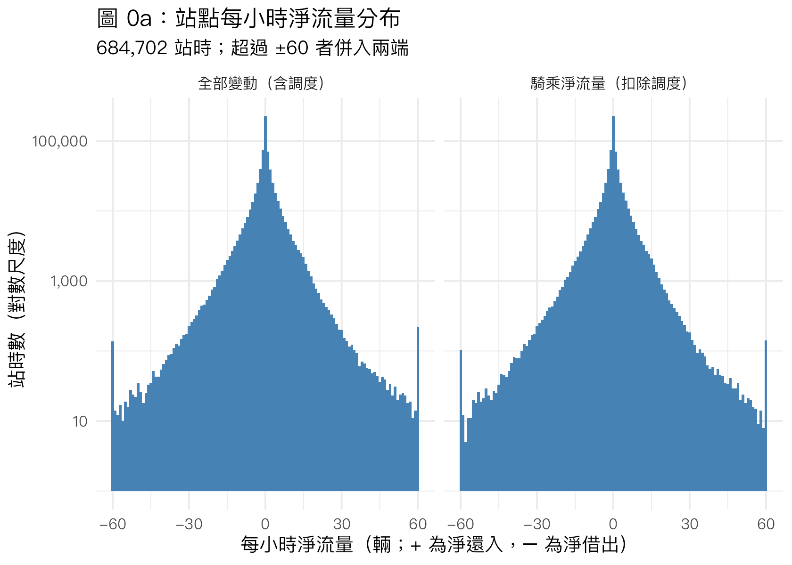
# Hours with |net change| >= 25: how much of the change came from dispatch steps?
flow_sample |>
filter(abs(net_flow) >= 25) |>
summarise(
hours = n(),
with_dispatch = sum(has_dispatch),
rider_net_still_ge_25 = sum(abs(rider_net_flow) >= 25),
share_change_from_dispatch = sum(abs(net_flow - rider_net_flow)) / sum(abs(net_flow))
)# A tibble: 1 × 4
hours with_dispatch rider_net_still_ge_25 share_change_from_dispatch
<int> <int> <int> <dbl>
1 7193 1330 6439 0.0959dispatch_by_hour <- flow_sample |>
summarise(
`調入（補車）` = mean(dispatch_bikes > 0 & net_flow - rider_net_flow > 0),
`調出（移車）` = -mean(dispatch_bikes > 0 & net_flow - rider_net_flow < 0),
.by = hour_of_day
) |>
pivot_longer(-hour_of_day, names_to = "direction", values_to = "share")
dispatch_timing <- ggplot(dispatch_by_hour, aes(hour_of_day, share * 100, fill = direction)) +
geom_col() +
geom_hline(yintercept = 0) +
scale_x_continuous(breaks = 0:23) +
scale_y_continuous(labels = \(x) paste0(abs(x), "%")) +
scale_fill_manual(values = c(`調入（補車）` = "darkgreen", `調出（移車）` = "firebrick")) +
labs(
title = "圖 0b：含調度的站時比例，依時段",
subtitle = "調度 = 兩分鐘左右的單次更新中可借車數變化 ≥ 10 輛；向上為淨調入、向下為淨調出",
x = "時段起點（時）",
y = "占該時段站時的比例",
fill = "方向"
)
save_figure(dispatch_timing, "fig0b_dispatch_timing")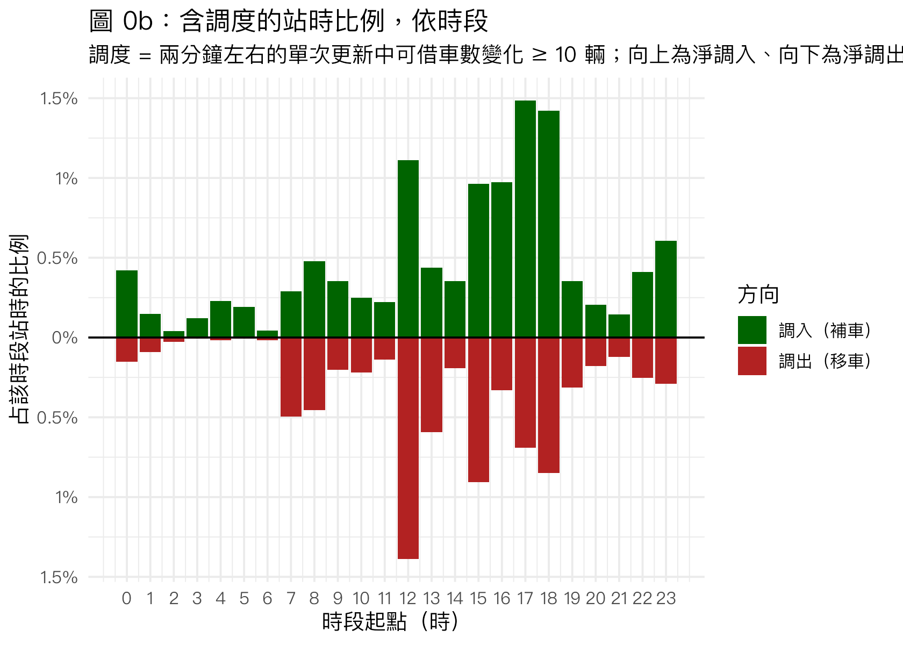
flow_sample |>
summarise(
hours_with_dispatch = sum(has_dispatch),
dispatch_bikes = sum(dispatch_bikes),
share_of_station_hours = mean(has_dispatch),
.by = station_name
) |>
arrange(desc(dispatch_bikes)) |>
head(10)# A tibble: 10 × 4
station_name hours_with_dispatch dispatch_bikes share_of_station_hours
<chr> <int> <int> <dbl>
1 捷運公館站(2號出口) 1214 20385 0.144
2 捷運公館站(3號出口) 674 11968 0.0801
3 臺大女九舍西南側 260 4816 0.0309
4 臺大第一活動中心西南側…… 248 3418 0.0295
5 臺大男六舍前 207 2766 0.0246
6 臺大社科院西側 164 2412 0.0195
7 臺大新體育館東南側 145 2274 0.0172
8 臺大社會系館南側 139 2229 0.0165
9 臺大男一舍前 128 2172 0.0152
10 臺大圖資系館北側 120 1922 0.0143圖 0a 比較兩個版本的淨流量分布（y 軸為對數尺度）：扣除調度後尾巴只略為變短，±25 輛以外的站時大多仍在。上面第一個表直接檢驗「一小時淨變化 ≥ 25 是不是調度」：7,193 個這類站時中，只有 1,330 個（18%）含有 ≥ 10 輛的單步變化，這些小時的淨變化只有 9.6% 來自調度步；扣除調度後仍有 6,439 個站時 |騎乘淨流量| ≥ 25。也就是說，大部分的大幅變化是由許多次小幅更新累積而成，與真實尖峰需求一致，原本以 25 輛一刀切排除的作法會把真實需求當成調度。
圖 0b 是含調度的站時比例（向上為淨調入、向下為淨調出）：調度集中在 12 時與 15–18 時，最高的時段約 1.5% 的站時有調入。調度量最多的是公館站 2、3 號出口（1,214 與 674 站時、共 32,353 輛次，分別占該站站時的 14.4% 與 8.0%），其次是女九舍、第一活動中心、男六舍。
需要注意的是，這個門檻只能抓到「一次放入或移走 10 輛以上」的調度。下面圖 2d 中公館站在捷運停駛的 03–05 時仍有每小時 5–12 輛的淨流入，同時圖 3a 的空站比例在 03–06 時快速下降；這比較像調度車在凌晨逐台把車放上車柱（每步只有 1–3 輛），而不是騎乘。因此「騎乘淨流量」仍含有部分調度，特別是公館站的凌晨時段。
1. 共變數與需求強度的關係
# Q1a. Pearson correlations at the station-hour level and the area-hour level.
correlation_table <- imap(samples, \(df, sample_name) {
station_level <- df |>
summarise(across(c(Temp, humidity_pct, rain), list(
abs_flow = \(x) cor(x, abs_flow, use = "complete.obs"),
net_flow = \(x) cor(x, net_flow, use = "complete.obs")
)))
area_level <- area_hourly[[sample_name]] |>
summarise(across(c(Temp, humidity_pct, rain), list(area_abs_flow = \(x) cor(x, mean_abs_flow, use = "complete.obs"))))
bind_cols(station_level, area_level) |>
pivot_longer(everything(), names_to = c("covariate", "outcome"), names_pattern = "^(Temp|humidity_pct|rain)_(.*)$") |>
pivot_wider(names_from = outcome, values_from = value) |>
mutate(sample = sample_name, .before = 1)
}) |>
list_rbind() |>
mutate(
covariate = recode(covariate, Temp = "氣溫", humidity_pct = "相對濕度", rain = "是否降雨"),
across(where(is.numeric), \(x) round(x, 3))
) |>
rename(
`樣本` = sample, `共變數` = covariate,
`與站時 |淨流量|` = abs_flow, `與站時淨流量` = net_flow, `與全區每小時平均 |淨流量|` = area_abs_flow
)
knitr::kable(
correlation_table,
caption = str_glue(
"表 3：天氣共變數與流量的 Pearson 相關係數（站時 N = {nrow(flow_sample)}；",
"全區小時 N = {nrow(area_hourly[[1]])}）"
)
)| 樣本 | 共變數 | 與站時 |淨流量| | 與站時淨流量 | 與全區每小時平均 |淨流量| |
|---|---|---|---|---|
| 全部變動（含調度） | 氣溫 | 0.091 | 0.000 | 0.244 |
| 全部變動（含調度） | 相對濕度 | -0.110 | 0.002 | -0.292 |
| 全部變動（含調度） | 是否降雨 | -0.036 | 0.006 | -0.097 |
| 騎乘淨流量（扣除調度） | 氣溫 | 0.093 | 0.000 | 0.244 |
| 騎乘淨流量（扣除調度） | 相對濕度 | -0.115 | 0.001 | -0.300 |
| 騎乘淨流量（扣除調度） | 是否降雨 | -0.037 | 0.006 | -0.097 |
表 3 是天氣共變數與流量的 Pearson 相關。站時層級的相關都很小（|r| ≤ 0.12），因為單站單小時的流量雜訊很大；把 86 站平均成全區每小時的流動強度後，相關明顯變強：氣溫 r ≈ 0.24、相對濕度 r ≈ −0.29 至 −0.30、降雨 r ≈ −0.10（兩個版本結果幾乎相同）。天氣與淨流量本身的相關幾乎為 0，表示天氣影響的是借還的總量，而不是哪個方向占多數。這些相關沒有控制時段：白天氣溫高、濕度低，流動又集中在白天，所以相關中混有日內時段的影響，需要下面的分組圖與迴歸釐清。
# Q1b. Hour-of-day profile of activity, by rain and day type (area-hour units, 95% CI across hours).
activity_profile <- imap(area_hourly, \(df, sample_name) {
df |>
filter(!is.na(rain)) |>
reframe(mean_ci(mean_abs_flow), .by = c(hour_of_day, day_type, rain)) |>
mutate(sample = sample_name)
}) |>
list_rbind() |>
mutate(rain = if_else(rain == 1, "降雨", "未降雨"))
activity_plot <- ggplot(activity_profile, aes(hour_of_day, mean, colour = rain, fill = rain)) +
geom_ribbon(aes(ymin = ci_low, ymax = ci_high), alpha = 0.2, colour = NA) +
geom_line() +
facet_grid(sample ~ day_type) +
scale_x_continuous(breaks = seq(0, 23, 3)) +
scale_colour_manual(values = c(`未降雨` = "darkorange", `降雨` = "steelblue"), aesthetics = c("colour", "fill")) +
labs(
title = "圖 1a：各時段站點平均 |淨流量|，依降雨與上班日／非上班日",
subtitle = "觀測單位為全區小時（各站平均）；陰影為跨小時的 95% 信賴區間",
x = "時段起點（時）",
y = "站點平均 |淨流量|（輛／小時）",
colour = "天氣", fill = "天氣"
)
save_figure(activity_plot, "fig1a_activity_by_hour_rain", height = 6.5)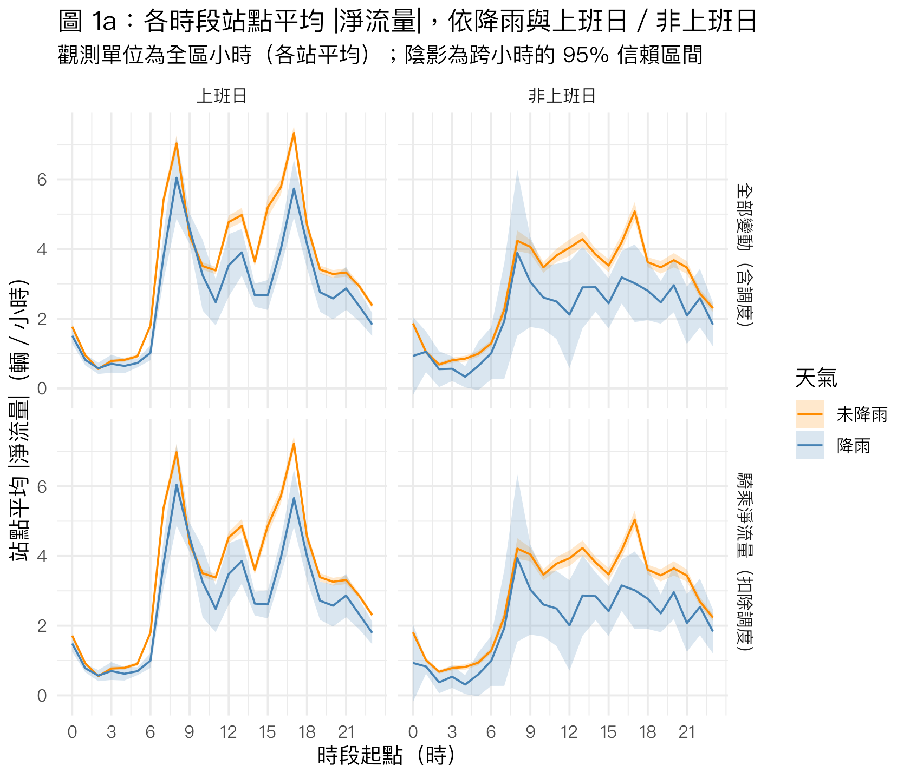
圖 1a 以全區小時為觀測單位，畫出各時段的站點平均 |淨流量| 及 95% 信賴區間，依降雨與上班日／非上班日分開。上班日有 08 時與 17 時兩個明顯尖峰、13 時有小高峰；非上班日從 08 時起維持在較平的高原、17 時略高。幾乎所有白天時段降雨的曲線都低於未降雨；凌晨時段兩者沒有差異。非上班日的降雨小時數少，信賴區間很寬。
# Q1c. Activity by temperature, daytime hours only (07–21), area-hour units.
temperature_profile <- imap(area_hourly, \(df, sample_name) {
df |>
filter(!is.na(Temp), !is.na(rain), hour_of_day %in% 7:21) |>
mutate(temp_bin = floor(Temp / 2) * 2 + 1) |>
reframe(mean_ci(mean_abs_flow), .by = c(temp_bin, rain)) |>
filter(n >= 10) |>
mutate(sample = sample_name)
}) |>
list_rbind() |>
mutate(rain = if_else(rain == 1, "降雨", "未降雨"))
temperature_plot <- ggplot(temperature_profile, aes(temp_bin, mean, colour = rain)) +
geom_pointrange(aes(ymin = ci_low, ymax = ci_high), position = position_dodge(width = 0.8)) +
facet_wrap(~sample) +
scale_colour_manual(values = c(`未降雨` = "darkorange", `降雨` = "steelblue")) +
labs(
title = "圖 1b：氣溫與站點平均 |淨流量|（07–22 時）",
subtitle = "每 2°C 一組（點為組中值），只顯示至少 10 個全區小時的組；線段為 95% 信賴區間",
x = "氣溫（°C）",
y = "站點平均 |淨流量|（輛／小時）",
colour = "天氣"
)
save_figure(temperature_plot, "fig1b_activity_by_temperature")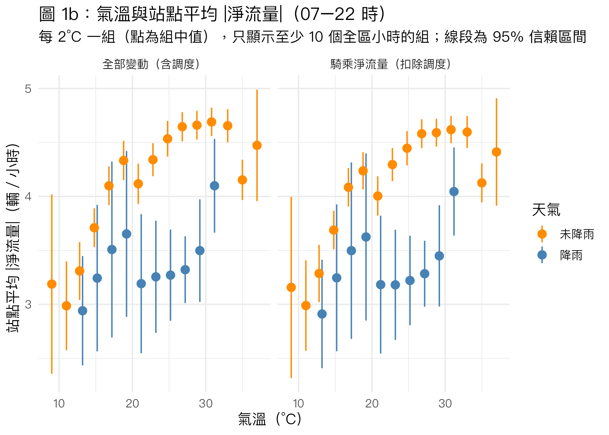
圖 1b 只看 07–22 時，把氣溫每 2°C 分一組。未降雨時，流動強度隨氣溫從 10°C 左右的約 3 輛上升到 25–32°C 的約 4.5 輛，超過 33°C 後略降，關係近似先升後平。降雨的各組都低於同溫度的未降雨組，但每組小時數少、信賴區間大。氣溫與季節、學期高度重疊（寒假在冬天），不能直接解讀為氣溫本身的影響，下面的迴歸同時控制學期。
# Q1d. Two-group comparison: rain vs no rain, weekday daytime area-hours.
rain_ttest <- imap(area_hourly, \(df, sample_name) {
test_data <- df |>
filter(weekday == 1, hour_of_day %in% 7:21, !is.na(rain))
test <- t.test(mean_abs_flow ~ rain, data = test_data)
test_data |>
summarise(n = n(), mean = mean(mean_abs_flow), sd = sd(mean_abs_flow), .by = rain) |>
pivot_wider(names_from = rain, values_from = c(n, mean, sd)) |>
transmute(
`樣本` = sample_name,
`未降雨 N` = n_0, `未降雨平均` = mean_0, `未降雨 SD` = sd_0,
`降雨 N` = n_1, `降雨平均` = mean_1, `降雨 SD` = sd_1,
`差異（降雨 − 未降雨）` = mean_1 - mean_0,
`Welch t 檢定 p 值` = format.pval(test$p.value, digits = 3, eps = 1e-4)
)
}) |>
list_rbind() |>
mutate(across(where(is.double), \(x) round(x, 3)))
knitr::kable(rain_ttest, caption = "表 4：上班日 07–22 時全區小時的站點平均 |淨流量|，降雨與未降雨比較")| 樣本 | 未降雨 N | 未降雨平均 | 未降雨 SD | 降雨 N | 降雨平均 | 降雨 SD | 差異（降雨 − 未降雨） | Welch t 檢定 p 值 |
|---|---|---|---|---|---|---|---|---|
| 全部變動（含調度） | 3202 | 4.657 | 1.798 | 348 | 3.654 | 1.869 | -1.003 | <1e-04 |
| 騎乘淨流量（扣除調度） | 3202 | 4.581 | 1.752 | 348 | 3.609 | 1.848 | -0.972 | <1e-04 |
# Q1e. Semester vs break, and working day vs day off: hour-of-day activity profile (rider flow).
calendar_profile <- area_hourly[[2]] |>
reframe(mean_ci(mean_abs_flow), .by = c(hour_of_day, day_type, term))
calendar_plot <- ggplot(calendar_profile, aes(hour_of_day, mean, colour = term, fill = term)) +
geom_ribbon(aes(ymin = ci_low, ymax = ci_high), alpha = 0.2, colour = NA) +
geom_line() +
facet_wrap(~day_type) +
scale_x_continuous(breaks = seq(0, 23, 3)) +
scale_colour_manual(values = c(`上課學期` = "darkgreen", `寒暑假` = "grey45"), aesthetics = c("colour", "fill")) +
labs(
title = "圖 1c：各時段站點平均 |騎乘淨流量|，依上課學期與上班日",
subtitle = "扣除調度；觀測單位為全區小時；陰影為跨小時的 95% 信賴區間",
x = "時段起點（時）",
y = "站點平均 |騎乘淨流量|（輛／小時）",
colour = NULL, fill = NULL
)
save_figure(calendar_plot, "fig1c_activity_by_semester_weekday")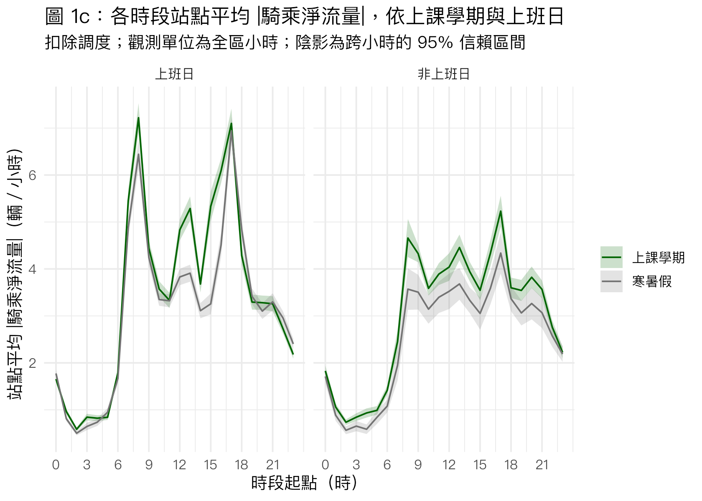
semester_ttest_data <- area_hourly[[2]] |>
filter(weekday == 1, hour_of_day %in% 7:21)
semester_ttest <- t.test(mean_abs_flow ~ semester, data = semester_ttest_data)
semester_ttest_data |>
summarise(N = n(), mean = mean(mean_abs_flow), sd = sd(mean_abs_flow), .by = term) |>
mutate(
`差異（上課學期 − 寒暑假）` = mean[term == "上課學期"] - mean[term == "寒暑假"],
`Welch t 檢定 p 值` = format.pval(semester_ttest$p.value, digits = 3, eps = 1e-4),
across(where(is.double), \(x) round(x, 3))
) |>
knitr::kable(caption = str_glue("表 4b：上班日 07–22 時全區小時的站點平均 |騎乘淨流量|，上課學期與寒暑假比較（N = {nrow(semester_ttest_data)} 小時）"))| term | N | mean | sd | 差異（上課學期 − 寒暑假） | Welch t 檢定 p 值 |
|---|---|---|---|---|---|
| 寒暑假 | 1410 | 4.164 | 1.529 | 0.532 | <1e-04 |
| 上課學期 | 2164 | 4.696 | 1.903 | 0.532 | <1e-04 |
圖 1c 依 semester 與 weekday 把全區小時分成四組，畫出扣除調度後的各時段流動強度。上班日的兩個尖峰（08、17 時）在學期與寒暑假都存在，08 時學期約高 0.8 輛，17 時幾乎相同；差距最大的是 12–16 時（學期 12–13 時約 5 輛，寒暑假不到 4 輛），對應上課期間中午與下午換教室、去餐廳的短程移動。非上班日的學期曲線在 08–21 時都比寒暑假高約 0.5–1 輛。夜間 19 時以後與凌晨四組都很接近。
表 4b 比較上班日 07–22 時的上課學期與寒暑假：學期平均每站每小時 |騎乘淨流量| 4.70 輛（SD 1.90，2,164 小時），寒暑假 4.16 輛（SD 1.53，1,410 小時），學期高 0.53 輛，Welch t 檢定 p < 0.0001。檢定的假設與限制同表 4：小時之間並不獨立，而且學期與季節（氣溫）重疊，需要下面的迴歸同時控制。
表 4 比較上班日 07–22 時的降雨與未降雨小時（觀測單位為全區小時，未降雨 3,202 小時、降雨 348 小時）。降雨小時的站點平均 |騎乘淨流量| 比未降雨低 0.97 輛（4.58 → 3.61；含調度版本低 1.00 輛），Welch t 檢定 p < 0.0001。Welch 檢定不假設兩組變異數相同，但假設各小時互相獨立；同一天相鄰的小時天氣與流量都相關，實際的有效樣本數比表上小，p 值會偏樂觀。此外降雨小時在一天中的分布與未降雨不同，所以這只是描述性比較，時段的影響由下面的迴歸控制。
# Q1f. Regression: weather and calendar dummies and station-hour activity.
# Model A: station x hour-of-day FE, with semester and weekday as regressors.
# Model B: station x hour-of-day x weekday x semester FE, so weather is compared within the same calendar cell.
# Weather and calendar are common to all stations within a day, so cluster by date.
activity_models <- list(
`A 含調度` = feols(abs_flow ~ rain + Temp + humidity_pct + semester + weekday | StationUID^hour_of_day,
data = samples[[1]], cluster = ~period_date),
`A 騎乘` = feols(abs_flow ~ rain + Temp + humidity_pct + semester + weekday | StationUID^hour_of_day,
data = samples[[2]], cluster = ~period_date),
`B 騎乘` = feols(abs_flow ~ rain + Temp + humidity_pct | StationUID^hour_of_day^weekday^semester,
data = samples[[2]], cluster = ~period_date)
)
etable(
activity_models,
dict = c(abs_flow = "|淨流量|（輛／小時）", rain = "降雨（1 = 有）", Temp = "氣溫（°C）", humidity_pct = "相對濕度（%）",
semester = "上課學期（1 = 是）", weekday = "上班日（1 = 是）",
`StationUID^hour_of_day` = "站點 × 時段",
`StationUID^hour_of_day^weekday^semester` = "站點 × 時段 × 上班日 × 學期", period_date = "日期"),
fitstat = ~ n + my + r2 + wr2,
signif.code = c("***" = 0.01, "**" = 0.05, "*" = 0.10),
headers = names(activity_models)
) A 含調度 A 騎乘 B 騎乘
A 含調度 A 騎乘 B 騎乘
Dependent Var.: |淨流量|（輛／小時） |淨流量|（輛／小時） |淨流量|（輛／小時）
降雨（1 = 有） -0.7657*** (0.1008) -0.7181*** (0.1013) -0.6473*** (0.0993)
氣溫（°C） 0.0386*** (0.0043) 0.0371*** (0.0044) 0.0379*** (0.0044)
相對濕度（%） -0.0017 (0.0024) -0.0034 (0.0026) -0.0047* (0.0026)
上課學期（1 = 是） 0.4696*** (0.0449) 0.4312*** (0.0467)
上班日（1 = 是） 0.5338*** (0.0501) 0.5104*** (0.0520)
Fixed-Effects: ------------------- ------------------- -------------------
站點 × 時段 Yes Yes No
站點 × 時段 × 上班日 × 學期 No No Yes
__________________ ___________________ ___________________ ___________________
S.E.: Clustered by: 日期 by: 日期 by: 日期
Observations 679,850 679,850 679,850
Dep. Var. mean 3.2227 3.1704 3.1704
R2 0.31843 0.31717 0.38208
Within R2 0.01088 0.01063 0.00611
---
Signif. codes: 0 '***' 0.01 '**' 0.05 '*' 0.1 ' ' 1tibble(
model = names(activity_models),
N = map_int(activity_models, nobs),
outcome_mean = map_dbl(activity_models, \(m) fitstat(m, "my")[[1]]),
date_clusters = map_int(activity_models, \(m) n_distinct(flow_sample$period_date[obs(m)]))
)# A tibble: 3 × 4
model N outcome_mean date_clusters
<chr> <int> <dbl> <int>
1 A 含調度 679850 3.22 354
2 A 騎乘 679850 3.17 354
3 B 騎乘 679850 3.17 354迴歸以站時 |淨流量| 為結果變數。模型 A 的解釋變數為降雨（1 = 有，參照組為未降雨）、氣溫（°C）、相對濕度（%）、上課學期（1 = 是，參照組為寒暑假）與上班日（1 = 是，參照組為週末、國定假日與颱風假），並控制「站點 × 時段」固定效果，係數是同一站同一時段內的差異；分別對含調度與騎乘兩個版本估計。模型 B 只用騎乘版本，把固定效果改為「站點 × 時段 × 上班日 × 學期」，讓天氣只在同一種日曆格內比較（因此不再估計日曆係數）。前一版的月份固定效果與 semester 高度重疊，這裡以學期取代。天氣與日曆在同一天內對所有站相同、而且相鄰小時相關，標準誤以日期群集（354 群）。三個模型 N 皆為 679,850（排除降雨或氣溫缺值的站時），結果平均：含調度 3.22、騎乘 3.17。
結果：模型 A（騎乘）中降雨時每站每小時 |淨流量| 減少 0.72 輛（SE 0.10，p < .01），約為平均的 23%；氣溫每高 1°C 增加 0.037 輛（p < .01）；上課學期多 0.43 輛（SE 0.05）、上班日多 0.51 輛（SE 0.05），兩者 p < .01，約為平均的 14% 與 16%；相對濕度不顯著。含調度版本的係數方向與大小都相近。模型 B 在同一日曆格內比較，降雨仍減少 0.65 輛、氣溫 +0.038，相對濕度 −0.005 只在 10% 水準顯著。模型 B 的 R² 從 0.32 升到 0.38，表示站點時段型態在上班日與學期之間確實不同；天氣與日曆額外解釋的變異仍小（within R² 約 0.006–0.011），需求的主體還是站點與時段結構。顯著性：* p < .10、** p < .05、*** p < .01。這是相關性的估計：降雨也可能同時改變調度行為或觀測品質，不能完全解讀為騎乘需求的因果效果。
2. 站點尖峰與「借車密集／還車密集」分類
# Working-day station x hour profiles. Each working day contributes one observation per station-hour,
# so the 95% CI treats days as independent draws.
FLOW_THRESHOLD <- 1
station_profiles <- imap(samples, \(df, sample_name) {
df |>
filter(weekday == 1) |>
reframe(mean_ci(net_flow), .by = c(StationUID, station_name, PositionLat, PositionLon, hour_of_day)) |>
mutate(
flow_type = case_when(
ci_high < 0 & mean <= -FLOW_THRESHOLD ~ "借車密集",
ci_low > 0 & mean >= FLOW_THRESHOLD ~ "還車密集",
.default = "均衡或不顯著"
),
sample = sample_name
)
}) |>
list_rbind()
flow_type_counts <- station_profiles |>
count(sample, hour_of_day, flow_type) |>
pivot_wider(names_from = flow_type, values_from = n, values_fill = 0)
knitr::kable(
flow_type_counts |> filter(sample == names(samples)[2]) |> select(-sample),
caption = str_glue("表 5：各時段被分類為借車／還車密集的站數（上班日，扣除調度；共 86 站）")
)| hour_of_day | 借車密集 | 均衡或不顯著 | 還車密集 |
|---|---|---|---|
| 0 | 2 | 79 | 5 |
| 1 | 0 | 82 | 4 |
| 2 | 0 | 85 | 1 |
| 3 | 1 | 79 | 6 |
| 4 | 0 | 84 | 2 |
| 5 | 2 | 76 | 8 |
| 6 | 11 | 57 | 18 |
| 7 | 23 | 17 | 46 |
| 8 | 38 | 10 | 38 |
| 9 | 24 | 43 | 19 |
| 10 | 15 | 54 | 17 |
| 11 | 28 | 35 | 23 |
| 12 | 21 | 32 | 33 |
| 13 | 23 | 16 | 47 |
| 14 | 4 | 53 | 29 |
| 15 | 35 | 24 | 27 |
| 16 | 41 | 24 | 21 |
| 17 | 55 | 11 | 20 |
| 18 | 31 | 47 | 8 |
| 19 | 27 | 49 | 10 |
| 20 | 27 | 50 | 9 |
| 21 | 35 | 42 | 9 |
| 22 | 14 | 57 | 15 |
| 23 | 4 | 60 | 22 |
flow_type_counts |>
filter(sample == names(samples)[1]) |>
summarise(across(c(`借車密集`, `還車密集`), sum))# A tibble: 1 × 2
借車密集 還車密集
<int> <int>
1 462 444flow_type_counts |>
filter(sample == names(samples)[2]) |>
summarise(across(c(`借車密集`, `還車密集`), sum))# A tibble: 1 × 2
借車密集 還車密集
<int> <int>
1 461 437分類方式：只用上班日、扣除調度的資料，每站每個時段的平均淨流量以跨上班日的 95% 信賴區間判斷（每個上班日在該站該時段貢獻一個觀測）。平均 ≤ −1 輛／小時且信賴區間上界 < 0 為借車密集；平均 ≥ +1 且下界 > 0 為還車密集；其餘為均衡或不顯著。1 輛的門檻是判斷性的選擇，目的是排除統計上顯著但實務上很小的差異。
表 5 顯示，凌晨 0–5 時幾乎所有站都是均衡的；07 時與 13 時是還車密集站最多的時段（46、47 站），08 時同時有 38 站借車密集、38 站還車密集，代表早上是「一群站把車送往另一群站」的時段；15–17 時以借車密集為主（17 時 55 站）；18–21 時仍有 27–35 站借車密集，還車密集只剩 8–10 站。全年站時段分類合計：含調度 462 個借車密集、444 個還車密集；扣除調度後 461 與 437，兩個版本的分類幾乎相同。
# Cluster stations by their working-day 24-hour rider net-flow profile.
profile_matrix <- station_profiles |>
filter(sample == names(samples)[2]) |>
select(StationUID, hour_of_day, mean) |>
pivot_wider(names_from = hour_of_day, values_from = mean, names_prefix = "h") |>
drop_na()
profile_values <- as.matrix(select(profile_matrix, -StationUID))
set.seed(5166)
elbow <- tibble(k = 1:8) |>
mutate(within_ss = map_dbl(k, \(centers) kmeans(profile_values, centers, nstart = 50)$tot.withinss))
elbow# A tibble: 8 × 2
k within_ss
<int> <dbl>
1 1 20772.
2 2 13739.
3 3 10289.
4 4 8487.
5 5 7194.
6 6 6281.
7 7 5804.
8 8 5383.set.seed(5166)
station_kmeans <- kmeans(profile_values, centers = 4, nstart = 50)
# Order clusters by their average 08–09 net flow (most rent-heavy first).
cluster_order <- tibble(raw_cluster = 1:4, morning = station_kmeans$centers[, "h8"]) |>
arrange(morning) |>
mutate(cluster = paste0("類型 ", row_number()))
station_clusters <- profile_matrix |>
select(StationUID) |>
mutate(raw_cluster = station_kmeans$cluster) |>
left_join(cluster_order, join_by(raw_cluster)) |>
select(StationUID, cluster) |>
left_join(station_info, join_by(StationUID))
station_clusters |>
count(cluster)# A tibble: 4 × 2
cluster n
<chr> <int>
1 類型 1 3
2 類型 2 5
3 類型 3 36
4 類型 4 42為了把 86 站歸納成幾種型態，把每站上班日 24 小時的平均騎乘淨流量當作一個 24 維向量做 k-means 分群（set.seed(5166)，nstart = 50）。組內平方和從 k = 1 到 4 下降最多（20,772 → 8,487），之後每增加一群下降有限，因此取 k = 4。類型編號依 08 時的平均淨流量由最負到最正排列：類型 1 有 3 站、類型 2 有 5 站、類型 3 有 36 站、類型 4 有 42 站。與排除 |淨流量| ≥ 25 的前一版相比，保留真實尖峰後，公館站 2、3 號出口的流量遠大於其他站，獨立成一類。
heatmap_data <- station_profiles |>
filter(sample == names(samples)[2]) |>
inner_join(select(station_clusters, StationUID, cluster), join_by(StationUID)) |>
mutate(morning = mean[hour_of_day == 8], .by = StationUID) |>
mutate(station_name = fct_reorder(station_name, morning, .desc = TRUE))
station_heatmap <- ggplot(heatmap_data, aes(hour_of_day, station_name, fill = pmax(pmin(mean, 8), -8))) +
geom_tile() +
facet_grid(cluster ~ ., scales = "free_y", space = "free_y") +
scale_fill_gradient2(low = "firebrick", mid = "white", high = "steelblue", limits = c(-8, 8)) +
scale_x_continuous(breaks = 0:23, expand = c(0, 0)) +
labs(
title = "圖 2a：各站上班日每小時平均騎乘淨流量",
subtitle = "扣除調度；紅 = 淨借出、藍 = 淨還入，超過 ±8 輛以端色表示\n依 k-means 類型分組，組內依 08 時淨流量排序",
x = "時段起點（時）",
y = NULL,
fill = "平均淨流量\n（輛／小時）"
) +
theme(axis.text.y = element_text(size = 6.5), panel.grid = element_blank())
save_figure(station_heatmap, "fig2a_station_hour_heatmap", width = 10, height = 14)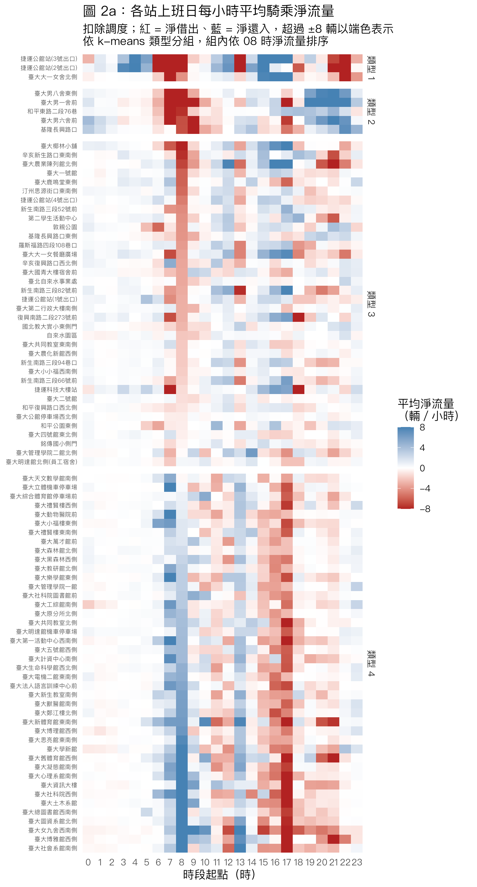
圖 2a 是每站（列）每個時段（欄）的上班日平均騎乘淨流量，紅色為淨借出、藍色為淨還入。最明顯的是 07–08 時的上下反差：類型 1、2 與部分類型 3 的站是紅色（車從這裡被騎走），類型 4 的系館、圖書館則是深藍色（車被騎進來）；到了 15–17 時顏色反轉。宿舍型（類型 2）在 19–22 時轉為深藍，是學生晚上回宿舍。公館站在 03–05 時呈藍色（淨流入），如第 0 節所述較可能是凌晨逐台補車。
cluster_profile <- station_profiles |>
inner_join(select(station_clusters, StationUID, cluster), join_by(StationUID)) |>
reframe(mean_ci(mean), .by = c(sample, cluster, hour_of_day))
cluster_profile_plot <- ggplot(cluster_profile, aes(hour_of_day, mean, colour = cluster, fill = cluster)) +
geom_hline(yintercept = 0, colour = "grey50") +
geom_ribbon(aes(ymin = ci_low, ymax = ci_high), alpha = 0.15, colour = NA) +
geom_line() +
facet_wrap(~sample) +
scale_x_continuous(breaks = seq(0, 23, 3)) +
labs(
title = "圖 2b：各站點類型的上班日平均淨流量曲線",
subtitle = "類型由騎乘淨流量的 k-means（k = 4）決定；陰影為跨站平均的 95% 信賴區間",
x = "時段起點（時）",
y = "平均淨流量（輛／小時；+ 為淨還入）",
colour = "站點類型", fill = "站點類型"
)
save_figure(cluster_profile_plot, "fig2b_cluster_profiles")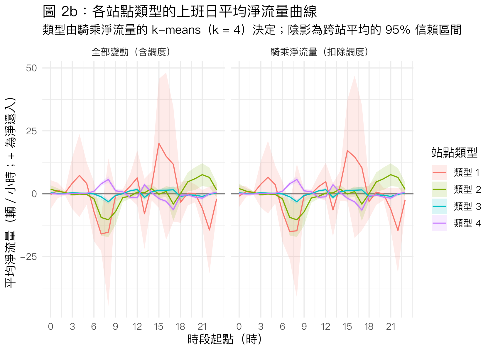
cluster_map <- ggplot(station_clusters, aes(PositionLon, PositionLat, colour = cluster)) +
geom_point(size = 2.5, alpha = 0.85) +
coord_quickmap() +
labs(
title = "圖 2c：站點類型的空間分布",
subtitle = str_glue("{nrow(station_clusters)} 站；類型由上班日 24 小時騎乘淨流量曲線的 k-means（k = 4）決定"),
x = "經度",
y = "緯度",
colour = "站點類型"
)
save_figure(cluster_map, "fig2c_cluster_map", width = 7, height = 7)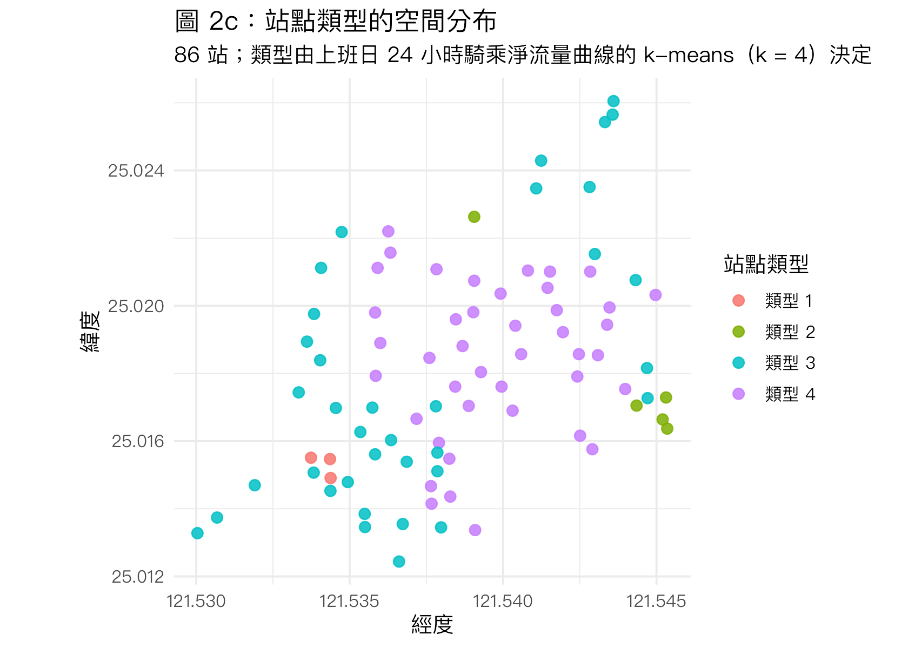
station_clusters |>
arrange(cluster, station_name) |>
summarise(stations = paste(station_name, collapse = "、"), .by = cluster) |>
knitr::kable(caption = "表 6：各類型包含的站點")| cluster | stations |
|---|---|
| 類型 1 | 捷運公館站(2號出口)、捷運公館站(3號出口)、臺大大一女舍北側 |
| 類型 2 | 和平東路二段76巷、基隆長興路口、臺大男一舍前、臺大男八舍東側、臺大男六舍前 |
| 類型 3 | 和平公園東側、和平復興路口西北側、國北教大實小東側門、基隆長興路口東側、復興南路二段273號前、捷運公館站(1號出口)、捷運公館站(4號出口)、捷運科技大樓站、敦親公園、新生南路三段52號前、新生南路三段66號前、新生南路三段82號前、新生南路三段94巷口、汀州思源街口東南側、第二學生活動中心、羅斯福路四段108巷口、自來水園區、臺北自來水事業處、臺大一號館、臺大二號館、臺大公館停車場西北側、臺大共同教室東南側、臺大四號館東北側、臺大國青大樓宿舍前、臺大大一女餐廳廣場、臺大小小福西南側、臺大明達館北側(員工宿舍)、臺大椰林小舖、臺大第二行政大樓南側、臺大管理學院二館北側、臺大農化新館西側、臺大農業陳列館北側、臺大鹿鳴堂東側、辛亥復興路口西北側、辛亥新生路口東南側、銘傳國小側門 |
| 類型 4 | 臺大五號館西側、臺大共同教室北側、臺大凝態館南側、臺大動物醫院前、臺大博理館西側、臺大博雅館西側、臺大原分所北側、臺大圖資系館北側、臺大土木系館、臺大天文數學館南側、臺大女九舍西南側、臺大學新館、臺大小福樓東側、臺大工綜館南側、臺大心理系館南側、臺大思亮館東南側、臺大教研館北側、臺大新生教室南側、臺大新體育館東南側、臺大明達館機車停車場、臺大森林館北側、臺大樂學館東側、臺大法人語言訓練中心前、臺大獸醫館南側、臺大生命科學館西北側、臺大社會系館南側、臺大社科院圖書館前、臺大社科院西側、臺大禮賢樓東南側、臺大禮賢樓西側、臺大立體機車停車場、臺大第一活動中心西南側、臺大管理學院一館、臺大綜合體育館停車場前、臺大總圖書館西南側、臺大舊體育館西側、臺大萬才館前、臺大計資中心南側、臺大資訊大樓、臺大鄭江樓北側、臺大電機二館東南側、臺大黑森林西側 |
圖 2b 是各類型站點平均淨流量曲線（陰影為跨站平均的 95% 信賴區間）。類型 1（捷運轉乘型，3 站）振幅最大：07–08 時每站每小時淨借出約 15 輛，15–17 時淨還入 10–17 輛，22 時再淨借出約 15 輛，03–05 時有凌晨補車造成的流入；只有 3 站，信賴區間很寬。類型 2（宿舍型，5 站）07–08 時淨借出約 10 輛，17 時小幅淨借出，19–22 時淨還入 5–8 輛；類型 4（教學區型）07–08 時淨還入約 4–6 輛、13 時再淨還入，15–17 時淨借出；類型 3 的曲線接近 0，只在 08 時輕微淨借出。兩個版本的形狀幾乎相同。圖 2c 顯示類型 4 集中在校園中心，類型 3 分布在校園邊緣與羅斯福路、新生南路一帶，類型 1 在公館，類型 2 在校園東南側的宿舍區。表 6 列出各類型的站點。
# Each station's strongest working-day outflow and inflow hour (rider flow).
peak_table <- station_profiles |>
filter(sample == names(samples)[2]) |>
summarise(
peak_rent_hour = hour_of_day[which.min(mean)],
peak_rent_flow = min(mean),
peak_return_hour = hour_of_day[which.max(mean)],
peak_return_flow = max(mean),
.by = c(StationUID, station_name)
) |>
left_join(select(station_clusters, StationUID, cluster), join_by(StationUID)) |>
mutate(across(c(peak_rent_flow, peak_return_flow), \(x) round(x, 2))) |>
arrange(peak_rent_flow)
knitr::kable(
head(select(peak_table, -StationUID), 15),
col.names = c("站點", "最強淨借出時段", "淨流量", "最強淨還入時段", "淨流量", "類型"),
caption = "表 7：上班日淨借出最強的 15 站及其尖峰時段（扣除調度；淨流量單位：輛／小時）"
)| 站點 | 最強淨借出時段 | 淨流量 | 最強淨還入時段 | 淨流量 | 類型 |
|---|---|---|---|---|---|
| 捷運公館站(3號出口) | 8 | -25.54 | 16 | 27.10 | 類型 1 |
| 臺大男八舍東側 | 8 | -19.50 | 21 | 8.57 | 類型 2 |
| 臺大大一女舍北側 | 7 | -17.88 | 17 | 20.15 | 類型 1 |
| 捷運公館站(2號出口) | 7 | -17.26 | 15 | 21.56 | 類型 1 |
| 臺大男一舍前 | 7 | -16.04 | 21 | 12.17 | 類型 2 |
| 捷運科技大樓站 | 18 | -14.62 | 16 | 6.07 | 類型 3 |
| 臺大博雅館西側 | 17 | -13.76 | 8 | 14.10 | 類型 4 |
| 基隆長興路口 | 9 | -11.93 | 22 | 7.18 | 類型 2 |
| 臺大社科院西側 | 17 | -11.83 | 8 | 9.39 | 類型 4 |
| 臺大社會系館南側 | 17 | -11.45 | 8 | 15.95 | 類型 4 |
| 臺大椰林小舖 | 8 | -11.42 | 17 | 12.28 | 類型 3 |
| 和平東路二段76巷 | 7 | -11.05 | 21 | 4.60 | 類型 2 |
| 臺大資訊大樓 | 17 | -10.98 | 8 | 8.77 | 類型 4 |
| 臺大農業陳列館北側 | 21 | -10.94 | 17 | 10.16 | 類型 3 |
| 臺大女九舍西南側 | 17 | -10.37 | 8 | 13.84 | 類型 4 |
peak_table |>
count(peak_rent_hour, name = "stations") |>
arrange(desc(stations)) |>
head(5)# A tibble: 5 × 2
peak_rent_hour stations
<int> <int>
1 17 36
2 8 20
3 7 7
4 16 7
5 13 5peak_table |>
count(peak_return_hour, name = "stations") |>
arrange(desc(stations)) |>
head(5)# A tibble: 5 × 2
peak_return_hour stations
<int> <int>
1 8 23
2 7 14
3 17 10
4 12 5
5 13 5表 7 列出上班日淨借出最強的 15 站及其最強淨借出與淨還入時段。前幾名是捷運公館站 3 號出口（08 時 −25.5 輛／小時、16 時 +27.1）、男八舍（08 時 −19.5）、大一女舍北側（07 時 −17.9）與公館站 2 號出口（07 時 −17.3）。全部 86 站中，最強淨借出時段最常見的是 17 時（36 站）與 08 時（20 站）；最強淨還入時段最常見的是 08 時（23 站）與 07 時（14 站）。捷運科技大樓站的最強淨借出（18 時）與淨還入（16 時）時段相近，可能是傍晚由捷運轉乘出發與回到捷運的人流先後到達，也可能有門檻以下的調度，需要 OD 旅次資料確認。
# Example stations: the three most rent-heavy and return-heavy at 08–09, with 95% CI.
morning_examples <- station_profiles |>
filter(sample == names(samples)[2], hour_of_day == 8) |>
arrange(mean)
example_ids <- c(head(morning_examples$StationUID, 3), tail(morning_examples$StationUID, 3))
example_plot <- station_profiles |>
filter(sample == names(samples)[2], StationUID %in% example_ids) |>
mutate(station_name = factor(station_name, levels = unique(morning_examples$station_name[morning_examples$StationUID %in% example_ids]))) |>
ggplot(aes(hour_of_day, mean)) +
geom_hline(yintercept = 0, colour = "grey50") +
geom_ribbon(aes(ymin = ci_low, ymax = ci_high), fill = "steelblue", alpha = 0.25) +
geom_line(colour = "steelblue") +
facet_wrap(~station_name, ncol = 3) +
scale_x_continuous(breaks = seq(0, 23, 6)) +
labs(
title = "圖 2d：08 時淨借出最強與淨還入最強各 3 站的上班日曲線",
subtitle = "扣除調度；陰影為跨上班日的 95% 信賴區間",
x = "時段起點（時）",
y = "平均淨流量（輛／小時）"
)
save_figure(example_plot, "fig2d_example_stations", height = 6)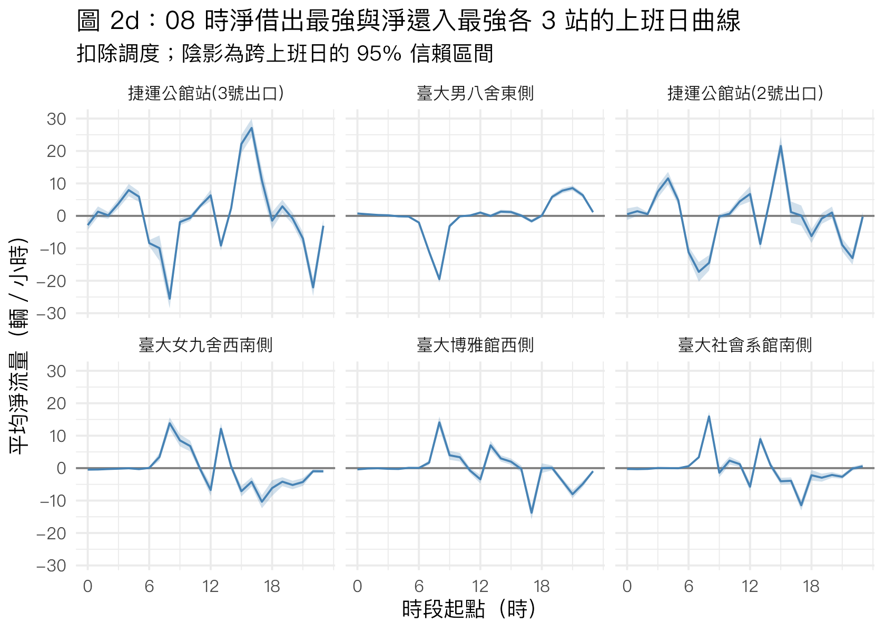
圖 2d 是 08 時淨借出最強與淨還入最強各 3 站的上班日曲線及 95% 信賴區間。上排三站（公館站 3 號出口、男八舍、公館站 2 號出口）早上淨借出：公館站在 15–16 時有每小時 20 輛以上的淨還入、22 時又淨借出，男八舍則在 19–22 時淨還入。公館站在 03–05 時的淨流入（捷運尚未營運）是騎乘淨流量仍含調度的證據。下排三站（女九舍、博雅館、社會系館）08 時淨還入約 14–16 輛、12 時淨借出、13 時再淨還入、17 時淨借出 10–14 輛，對應上下課的節奏。信賴區間很窄，表示這些上班日型態每天都很穩定，可直接作為調度排程的依據。
3. 其他可由本資料回答的問題
3.1 什麼時候最容易空站或滿站？
# Snapshot at the end of each period; area-hour shares with 95% CI across hours.
empty_full_profile <- area_hourly[[1]] |>
pivot_longer(c(share_empty, share_full), names_to = "state", values_to = "share") |>
reframe(mean_ci(share), .by = c(day_type, hour_of_day, state)) |>
mutate(state = recode(state, share_empty = "空站（無車可借）", share_full = "滿站（無位可還）"))
empty_full_plot <- ggplot(empty_full_profile, aes(hour_of_day, mean * 100, colour = state, fill = state)) +
geom_ribbon(aes(ymin = ci_low * 100, ymax = ci_high * 100), alpha = 0.2, colour = NA) +
geom_line() +
facet_wrap(~day_type) +
scale_x_continuous(breaks = seq(0, 23, 3)) +
scale_colour_manual(values = c(`空站（無車可借）` = "firebrick", `滿站（無位可還）` = "steelblue"), aesthetics = c("colour", "fill")) +
labs(
title = "圖 3a：空站與滿站的站點比例，依時段",
subtitle = "以時段結束時的整點快照判斷；陰影為跨全區小時的 95% 信賴區間",
x = "時段起點（時）",
y = "站點比例（%）",
colour = "狀態", fill = "狀態"
)
save_figure(empty_full_plot, "fig3a_empty_full_by_hour")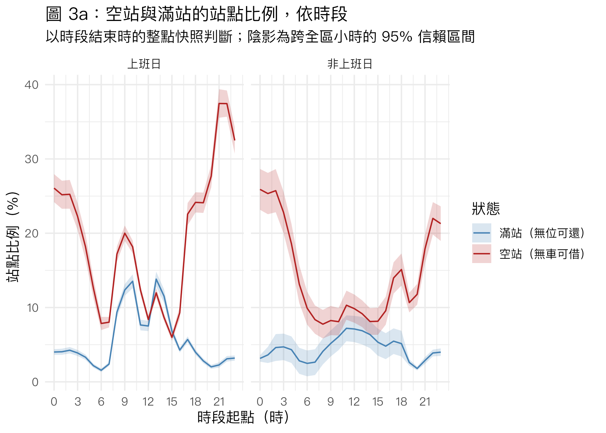
station_empty_full <- flow_sample |>
filter(weekday == 1, hour_of_day %in% 7:21) |>
summarise(
share_empty = mean(is_empty),
share_full = mean(is_full),
.by = c(StationUID, station_name)
) |>
left_join(select(station_clusters, StationUID, cluster), join_by(StationUID))
bind_cols(
station_empty_full |>
slice_max(share_empty, n = 10) |>
transmute(`常空站` = station_name, `空站比例 %` = round(100 * share_empty, 1), `類型 ` = cluster),
station_empty_full |>
slice_max(share_full, n = 10) |>
transmute(`常滿站` = station_name, `滿站比例 %` = round(100 * share_full, 1), `類型` = cluster)
) |>
knitr::kable(caption = str_glue("表 8：上班日 07–22 時空站與滿站比例最高的 10 站（每站約 {round(mean(count(filter(flow_sample, weekday == 1, hour_of_day %in% 7:21), StationUID)$n))} 站時）"))| 常空站 | 空站比例 % | 類型 | 常滿站 | 滿站比例 % | 類型 |
|---|---|---|---|---|---|
| 臺大小小福西南側 | 38.8 | 類型 3 | 臺大電機二館東南側 | 24.9 | 類型 4 |
| 臺大二號館 | 36.3 | 類型 3 | 臺大原分所北側 | 23.6 | 類型 4 |
| 臺大四號館東北側 | 32.6 | 類型 3 | 臺大思亮館東南側 | 19.6 | 類型 4 |
| 臺大第二行政大樓南側 | 31.0 | 類型 3 | 臺大新生教室南側 | 19.3 | 類型 4 |
| 臺大共同教室東南側 | 28.6 | 類型 3 | 臺大鄭江樓北側 | 17.6 | 類型 4 |
| 銘傳國小側門 | 28.1 | 類型 3 | 臺大天文數學館南側 | 17.6 | 類型 4 |
| 臺大大一女舍北側 | 27.8 | 類型 1 | 臺大森林館北側 | 17.1 | 類型 4 |
| 復興南路二段273號前 | 27.0 | 類型 3 | 臺大工綜館南側 | 16.7 | 類型 4 |
| 臺大森林館北側 | 25.0 | 類型 4 | 臺大凝態館南側 | 16.3 | 類型 4 |
| 臺大公館停車場西北側 | 24.7 | 類型 3 | 臺大心理系館南側 | 15.0 | 類型 4 |
圖 3a 是每個時段結束時空站與滿站的站點比例（觀測單位為全區小時，陰影為 95% 信賴區間）。上班日空站比例在 06–07 時最低（約 8%），早上尖峰後升到約 20%，15 時降到約 6%，然後一路上升到 21–22 時的約 37%，凌晨維持在 25% 左右並在 03–06 時快速下降（與凌晨補車一致）；非上班日形狀類似但晚間峰值較低（約 22%）。滿站比例上班日在 09–10 時與 13 時最高（約 13–14%），其他時間大多在 5% 以下。表 8 顯示上班日 07–22 時常空站多屬類型 3（小小福西南側 38.8%、二號館 36.3%），常滿站全是教學區型（電機二館東南側 24.9%、原分所北側 23.6%）。
這對後續工作有兩個意義：(1) 晚間大量空站時，借車需求被截斷，淨流量會低估真實需求，預測模型需要以「有車可借」的時間作為暴露量（提案 H3）；(2) 上午教學區滿站與晚間空站是調度最需要處理的兩個時段。
3.2 上班日與非上班日的流動型態是否不同？各月份呢？
monthly_activity <- imap(area_hourly, \(df, sample_name) {
df |>
filter(hour_of_day %in% 7:21) |>
reframe(mean_ci(mean_abs_flow), .by = c(month, day_type)) |>
mutate(sample = sample_name)
}) |>
list_rbind()
monthly_plot <- ggplot(monthly_activity, aes(month, mean, colour = day_type)) +
geom_pointrange(aes(ymin = ci_low, ymax = ci_high), position = position_dodge(width = 0.4)) +
geom_line(position = position_dodge(width = 0.4)) +
facet_wrap(~sample) +
scale_x_continuous(breaks = 1:12) +
labs(
title = "圖 3b：各月份 07–22 時站點平均 |淨流量|",
subtitle = "觀測單位為全區小時；線段為 95% 信賴區間；10–12 月含整天無資料的日期",
x = "月份",
y = "站點平均 |淨流量|（輛／小時）",
colour = NULL
)
save_figure(monthly_plot, "fig3b_monthly_activity")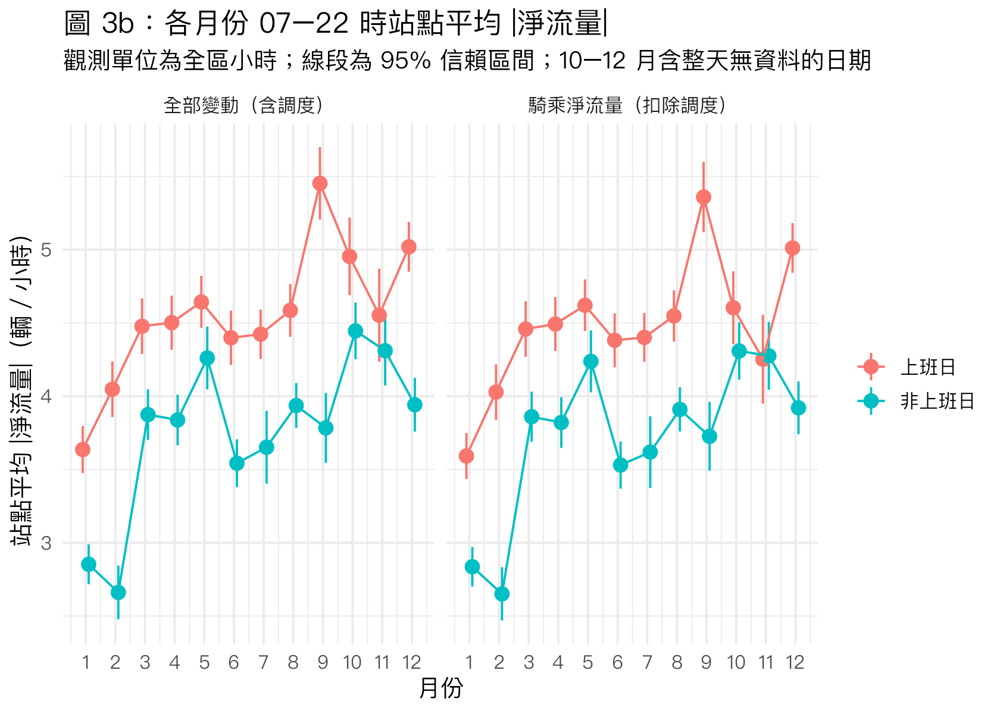
# How similar is each station's day-off profile to its working-day profile (rider flow)?
weekday_weekend_similarity <- rider_sample |>
summarise(mean_net = mean(net_flow), .by = c(StationUID, station_name, day_type, hour_of_day)) |>
pivot_wider(names_from = day_type, values_from = mean_net) |>
summarise(profile_correlation = cor(`上班日`, `非上班日`, use = "complete.obs"), .by = c(StationUID, station_name)) |>
left_join(select(station_clusters, StationUID, cluster), join_by(StationUID))
weekday_weekend_similarity |>
summarise(mean_ci(profile_correlation), .by = cluster) |>
arrange(cluster)# A tibble: 4 × 5
cluster mean ci_low ci_high n
<chr> <dbl> <dbl> <dbl> <int>
1 類型 1 0.483 0.0697 0.897 3
2 類型 2 0.845 0.773 0.918 5
3 類型 3 0.487 0.406 0.568 36
4 類型 4 0.679 0.641 0.716 42圖 3b 是各月份 07–22 時的站點平均 |淨流量|，依上班日與非上班日分開。1–2 月（寒假）最低，3 月開學後明顯上升；7–8 月暑假的上班日並未明顯下降，反映暑修、研究生與一般通勤仍在；9 月開學的上班日最高（約 5.4 輛），12 月次之。兩個版本幾乎相同，所以前一版「9 月調度特別多」的推論不成立，9 月的高峰是真實需求。10–12 月含 10 天整天無資料，這幾個月的平均建立在較少天數上。上班日幾乎每個月都高於非上班日。
上班日與非上班日的 24 小時曲線相似度（每站兩條平均騎乘淨流量曲線的相關係數，跨站平均）：類型 2（宿舍）為 0.85、類型 4 為 0.68、類型 3 為 0.49、類型 1 為 0.48（只有 3 站，信賴區間 0.07–0.90）。宿舍型站點非上班日仍維持「早出晚歸」的型態，其他站則明顯不同，因此預測時上班日與非上班日應分開處理。
3.3 淨流量有多可預測？
# Within-station autocorrelation of rider net flow at selected lags; unusable hours are NA.
autocorrelation <- youbike_flow_hourly |>
select(StationUID, datetime) |>
left_join(select(rider_sample, StationUID, datetime, net_flow), join_by(StationUID, datetime)) |>
arrange(StationUID, datetime) |>
group_by(StationUID) |>
mutate(
lag_1 = lag(net_flow, 1),
lag_2 = lag(net_flow, 2),
lag_24 = lag(net_flow, 24),
lag_168 = lag(net_flow, 168)
) |>
ungroup() |>
pivot_longer(starts_with("lag_"), names_to = "lag", values_to = "lagged") |>
summarise(
N = sum(!is.na(net_flow) & !is.na(lagged)),
correlation = cor(net_flow, lagged, use = "complete.obs"),
.by = lag
)
autocorrelation |>
mutate(lag = recode(lag, lag_1 = "1 小時前", lag_2 = "2 小時前", lag_24 = "24 小時前（昨天同時）", lag_168 = "168 小時前（上週同時）")) |>
knitr::kable(digits = 3, caption = str_glue("表 9：站點騎乘淨流量與自身落後值的相關（扣除調度；N 為兩者皆有值的站時）"))| lag | N | correlation |
|---|---|---|
| 1 小時前 | 684009 | -0.023 |
| 2 小時前 | 683316 | -0.052 |
| 24 小時前（昨天同時） | 671578 | 0.294 |
| 168 小時前（上週同時） | 648621 | 0.336 |
# Share of station-hour variance explained by historical calendar-cell averages alone.
pattern_fits <- list(
`站點 × 時段` = feols(net_flow ~ 1 | StationUID^hour_of_day, data = rider_sample),
`站點 × 時段 × 上班日` = feols(net_flow ~ 1 | StationUID^hour_of_day^weekday, data = rider_sample),
`站點 × 時段 × 上班日 × 學期` = feols(net_flow ~ 1 | StationUID^hour_of_day^weekday^semester, data = rider_sample)
)
tibble(
fixed_effects = names(pattern_fits),
N = map_int(pattern_fits, nobs),
r2 = map_dbl(pattern_fits, \(m) r2(m, "r2"))
) |>
knitr::kable(digits = 3, caption = "表 10：只用歷史同時段平均（固定效果）能解釋多少騎乘淨流量變異")| fixed_effects | N | r2 |
|---|---|---|
| 站點 × 時段 | 684702 | 0.209 |
| 站點 × 時段 × 上班日 | 684702 | 0.255 |
| 站點 × 時段 × 上班日 × 學期 | 684702 | 0.284 |
表 9 顯示，同一站騎乘淨流量與前 1、2 小時的相關接近 0（−0.02 與 −0.05），但與昨天同一時段（0.29）、上週同一時段（0.34）的相關明顯為正：淨流量的可預測性主要來自固定的日內與週內型態，而不是短期的延續。表 10 顯示，只用「站點 × 時段」歷史平均可解釋 20.9% 的站時騎乘淨流量變異，再區分上班日提高到 25.5%，再區分學期提高到 28.4%。兩個日曆虛擬變數合計增加約 7.5 個百分點的解釋力，應納入提案 1.4.3 預測模型的基準。
結果解讀與限制
- 淨流量不是借還次數。 同一小時內借 10 還 8 只會記為 −2，所以 |淨流量| 低估實際流動，也無法分辨「借車與還車都很多」和「都很少」的站。分鐘級的增減步數受 ±1 跳動影響，處理後才能當作借還次數。
- 調度只扣除了一部分。 單步 ≥ 10 輛的門檻抓得到一次放入或移走大量車輛的調度，抓不到逐台上架的補車；公館站 03–05 時的淨流入顯示騎乘版本仍含調度。門檻本身也是判斷性選擇，10 人在兩分鐘內同時借車的極端情況會被誤判為調度。
- 截斷需求。 空站時無法借、滿站時無法還，晚間空站比例超過三分之一，此時觀察到的淨流量低估需求。
- 快照與天氣的限制。 整點狀態取該整點前最後一筆更新，若更新延遲，流量會落到相鄰小時；天氣只有臺北站（466920）一個測站，與校園的降雨時間可能不完全一致。
- 日曆定義。
weekday依組員確認的清單把 5/1 勞動節與 10/4 列為非上班日；semester包含考試週，但未細分開學週、考試週與校園活動日。 - 以上皆為相關性描述，不代表因果效果；分類與分群（門檻 1 輛、k = 4）屬判斷性選擇，改變設定可能使少數邊界站點換類。
執行狀態
2026-10-18（改用分鐘級調度判定並加入日曆變數後）以乾淨 R 程序（Rscript --vanilla，knitr::knit() 輸出至暫存位置）完整執行；兩個輸入檔 SHA-256 皆與 PROJECT-PROPOSAL.md → Data Artifacts 登記值一致。本文所有數字取自該次輸出，圖檔存於 finding/youbike_eda_figures/。未輸出 HTML。